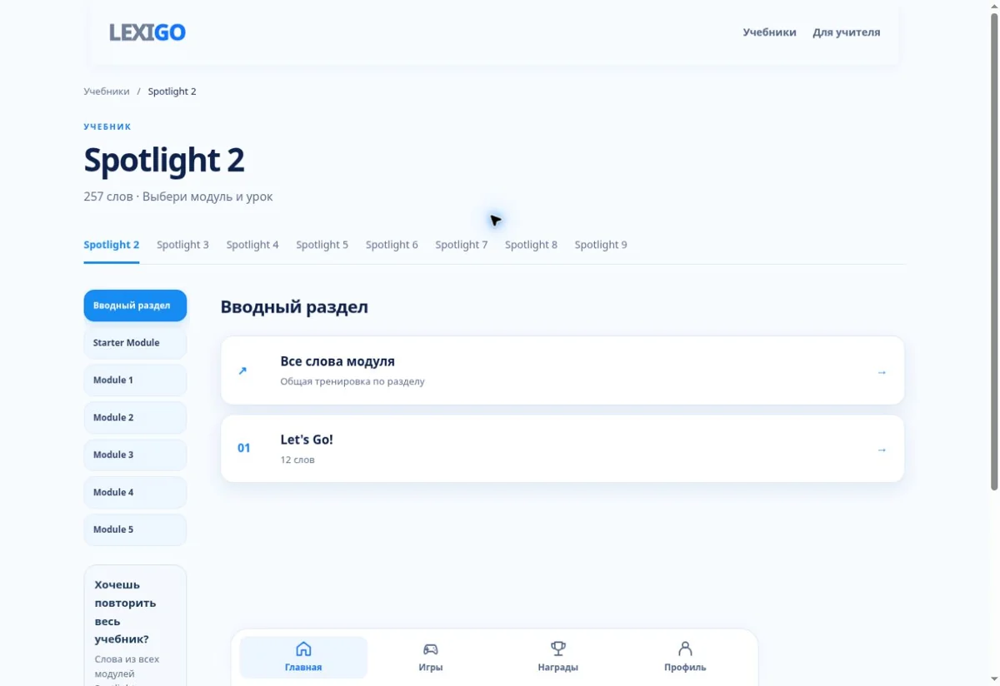

01 / LEXIGOПревью проекта

LEXIGO
Английские слова, которые хочется выучить. Интерактивная платформа объединяет лексику, игровые задания и самостоятельную практику.
Для учеников и учителей английского
Проект развивается. Представленная версия не является окончательной.
Открыть проект